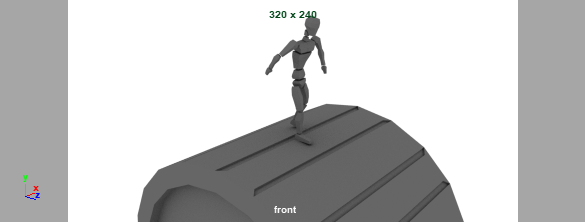
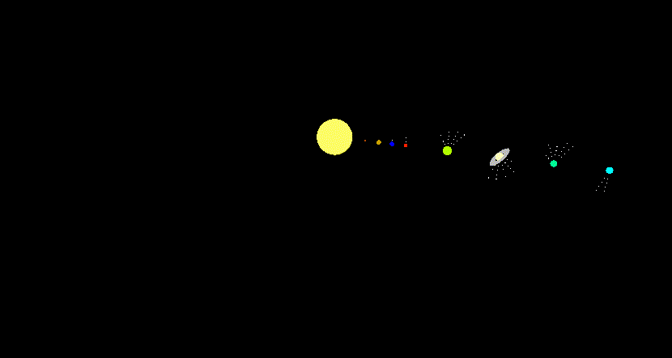

These animations were prepared using mostly my own models imported from ZBrush or Maya to demonstrate my rigging capabilities.


These models were prepared to demonstrate my abilities to recreate real world scenes from reference images, or just general modeling techniques.
These are several selected works from a compositing course demonstrating ( 2D and some 3D) and green screen principles (rotoscoping and keying).
Film clips featuring NYC were captured by myself and other clips are from Nuke training resources. Additional effects were sourced from ActionVFX.